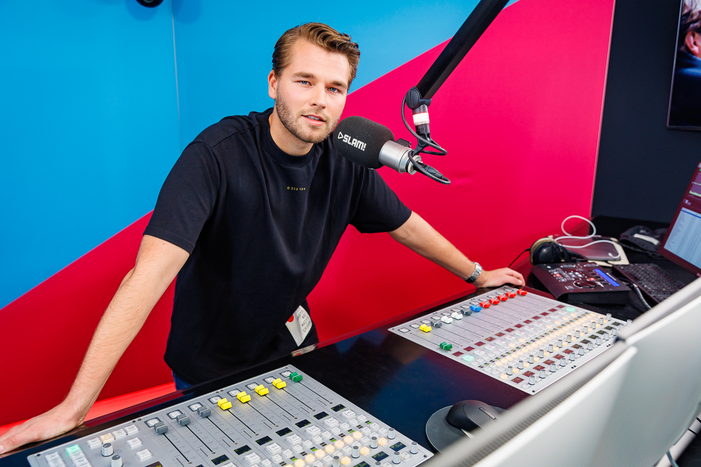

Voice-over Hielke Boersma

Ben je op zoek naar een ervaren voice-over?
Video voorbeelden
Luister naar voorbeelden
Voice-over diensten
- Radio commercials
- TV commercials
- Bedrijfsfilms
- E-learning
- IVR / Telefoon
Referenties
Een selectie van tevreden opdrachtgevers: 100%NL, Bedrijvingsfestival, EY, Gemeente Den Haag, Gemeente Groningen, Ministerie van Justitie en Veiligheid, OOG TV, PWC, Radio 538, RTV Noord, SBS 6, SLAM!.